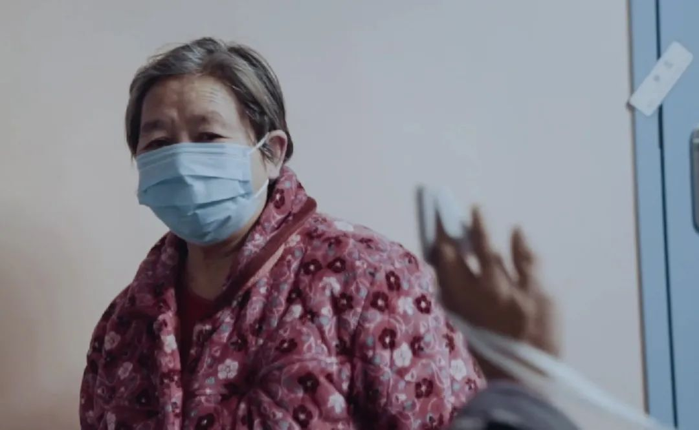

值得一听！一位从上海驰援武汉医生的谈话录音，很真实，很感人
原文链接 备份链接 这是驰援武汉的复旦大学附属中山医院医疗队领队朱畴文的谈话录音，讲述了他和他的团队从抵达武汉，进驻医院到参与治疗过程的经历，在谈到武汉和武汉人时，他几度声音哽咽。关于防护物资、关于病人收治、关于疫苗、关于心理压力、关于 …

第二集：久别
武汉新冠肺炎最为猛烈时，一支来自南京的医疗队进驻武汉同济医院，开始了一场艰难的战役。与此同时，本刊编辑陈玮曦带着摄影机走进重症病房，记录下了医生和病患并肩作战的日日夜夜。
《时尚先生 Esquire》联合腾讯新闻，正在连续发布系列纪录短片《武汉·重症区六层》，本视频为系列第二集。
该内容为《时尚先生 Esquire》与腾讯新闻独家合作内容，谢绝转载


当你老了，睡意沉沉
67岁的周开琴（音）做完 CT 之后在走廊呆了一会，并且「骂」了护士一顿。病人们不能随意走动，她是唯一有「特权」的患者。
她已经快两周没见过丈夫。当 66 岁的老头子躺在病床上被推出来，她沉默，看着他哭，就像五天前看着他照片哭那样。照片是护士长拿着她的手机去隔壁拍的一段视频的封面，视频里老头子戴着面罩告诉她，「没事」。

她就那么看着视频封面。有人告诉她按中间的按钮可以播放，但她还是那样看着，屏幕暗了就按亮，眼泪流下来。


周开琴不是武汉人，年长后和丈夫追随开餐馆的儿子定居。她是最温和最礼貌的那种病人，相信大夫，不太会用手机也不多问，医生和护士问她的需要，她只说想见隔壁病房的丈夫：在那场凌晨的收治中，因为事出紧急，也因为病床紧张，他们被依性别分开，她的病很快好转，他却一直在恶化。

武汉同济医院光谷院区 E1 区六层的病人大多年事已高，他们想念老伴和子女，想念熟悉的生活。一位老人离家时带上了写着三儿子电话的纸条，从隔离点到医院，她一直贴身揣着；另一位老人给医生看她常吃的药，医生要给她对症开更好的，她却不想换；最特别的那位——唯一一个总是从病房跑出来的老爷子，跟护士聊了很久往事，告诉她自己当兵的时候见过周总理。护士告诉他病情在好转，劝他不要再出来，他答应了，两天后在走廊上哭着要拖鞋，说按照老家的习俗死前要好好洗个澡。

护士长吴静说，病人们不愿意医护人员在病房呆太久，不想传染他们；病房里友好和睦，如果有人提出要安静，或者不想看电视，其他人都愿意依着他的需要。「在这个特殊的时期，」她这样总结，「爱好像被放大了。」

C O N T R I B U T O R S
撰文：初子靖
*编辑*：****布一
责任编辑：Neil

先生在场 | 疫情系列报道
疫情之下，每个“普通”故事背后的光辉
__________________


**给我好看！ **
**
原文链接 备份链接 这是驰援武汉的复旦大学附属中山医院医疗队领队朱畴文的谈话录音，讲述了他和他的团队从抵达武汉，进驻医院到参与治疗过程的经历，在谈到武汉和武汉人时，他几度声音哽咽。关于防护物资、关于病人收治、关于疫苗、关于心理压力、关于 …
原文链接 备份链接 澎湃新闻记者 李佳蔚 郁斐 制图 进驻武汉第一天，上海医疗队就知道，要治愈的不仅是患者身体，治愈出院也不会是服务终点。 时至今日，事实证明他们做得不赖。 2月7日，上海中山医院第四批医疗队进驻武汉大学人民医院东院，整建 …
原文链接 备份链接 医学史 今天你的行医故事，就是明天的医学史 按 除夕夜，上海首批136名医务人员组成的医疗队紧急驰援武汉。本文作者，上海仁济医院呼吸科主治医师查琼芳从1月24日起就进驻金银潭医院重症病房工作。在完成高强度、忙碌而艰苦的 …
原文链接 备份链接 等武汉解除封城，我马上回黄冈，现在就想和妻子好好说说话。”胡安平说。 全文2675字，阅读约需5分钟 胡安平(化名)将出院后的日子称为“第二段人生”。 今年53岁的胡安平是湖北黄冈人，在黄冈菜市场内经营家禽生意。去 …
原文链接 备份链接 原创 钟玄雅 真实故事计划 真实故事计划 4天前 武汉是世界上大学生最多的城市之一。新型冠状病毒肺炎疫情爆发后，一百余万大学生返乡，成为各地防止传染的重点防控隔离对象，遭遇着忧虑、歧视和隐私泄露。疫情给这群新鲜人上了社 …